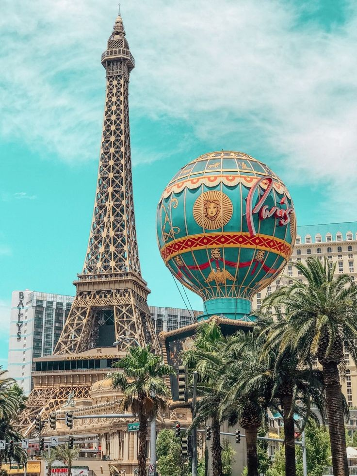
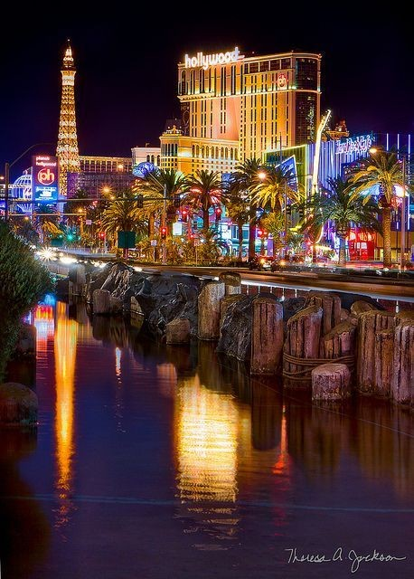
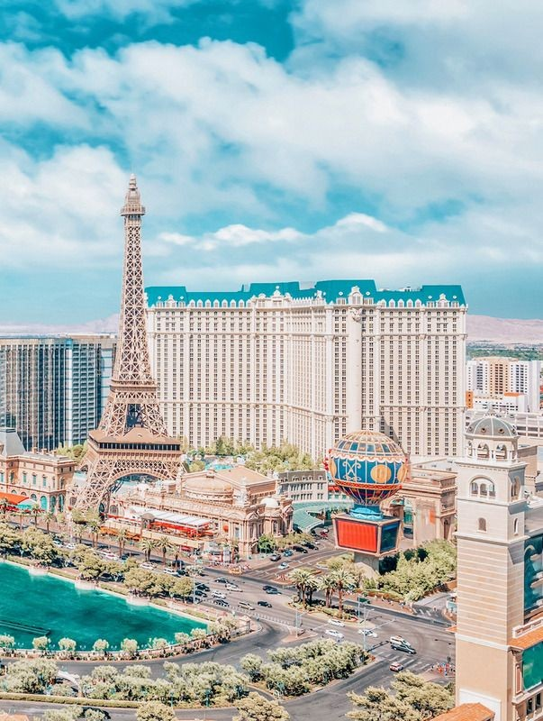
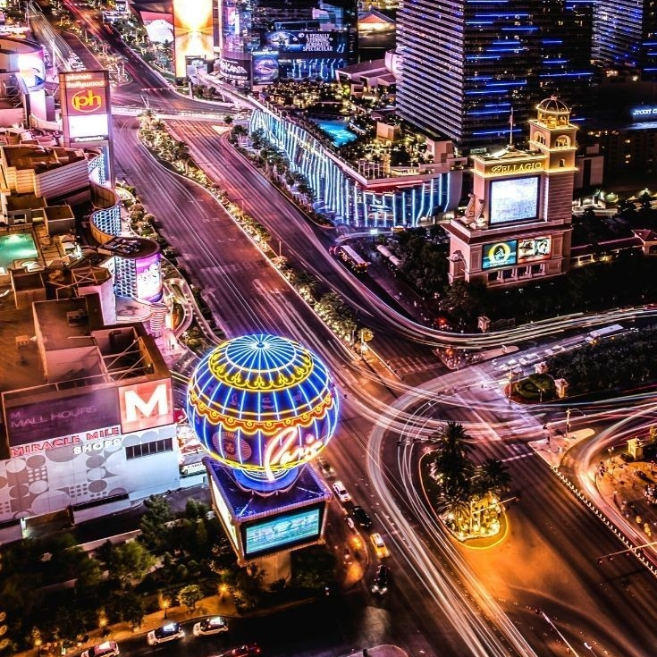
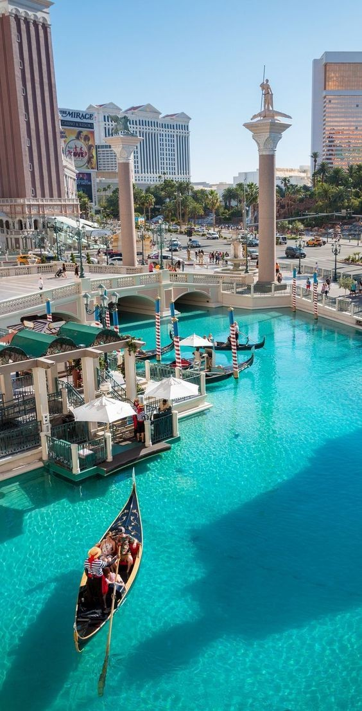
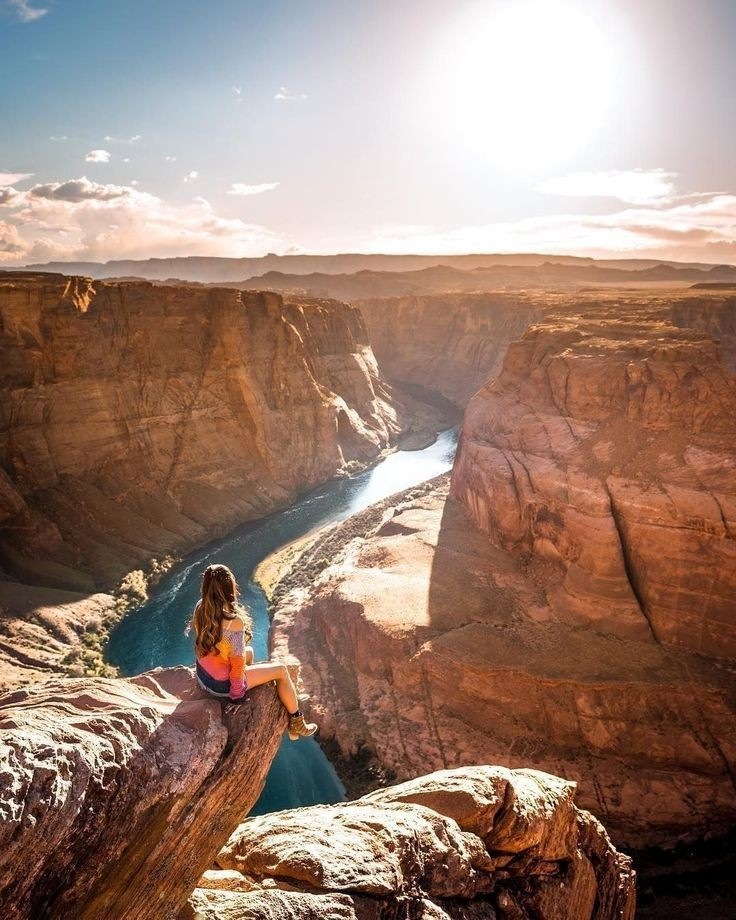

LAS VEGAS

Le nom de Las Vegas, qui signifie "Les Prairies" ou "Les vallées Fertiles", lui a été donné par les
espagnols en raison de l'eau présente dans les sous-sols. Située dans une vallée au frontière de la
Californie, de l'Arizona et de l'Utah, Las Vegas est entourée de montages enneigées en hivers. Le
climat y est pourtant aride, entretenant des températures très douces en hivers et un peu plus "hot"
en été, mais qu'importe: tout est climatisé!

Las Vegas est une ville réputée pour sa vie nocturne animée, ses casinos ouverts 24h/24 et autres
divertissements. Le point central de la ville correspond à sa rue principale, the strip, longue d'un
peu plus de 4miles. Ce boulevard abrite des hôtels à thème et des créatures élaborées comme les
fontaines synchronisées avec la musique ainsi que des répliques de monuments connus: pyramide
égyptienne, Grand Canal de Venise, et Tour Eiffel.

On y trouve les casinos les plus mythiques : Le Flamingo, le Tropicana, le Ceasars Palace construit
dans les années 60 dans un style Renaissance italienne qui recoit dans son Colosseum les plus grands stars de la chanson, le paris avec sa Tour Effeil...24h/24h et 7j/7, le Strip peut être parcouru en bus grâce à The Deuce.
D'autres établissements plus modernes sont venus rejoindre cette cohorte: le Wynn, le Bellagio, le Trump, The Hôtel à Mandalay Bay,un Four Seasons...Et plus récemment l'Aria qui offre des décors et des ambiances sur mesure

De plus, point n'est besoin de se ruiner aux tables de jeu à Las Vegas: les shopping addicts ont l'occasion de s'adonner à leur passe-temps favori: le Strip et les grands hôtels regorgent de "malls" où les cartes de crédit ont une autre occasion de flamber. Mais on peut aussi shopper malin à Las Vegas. D'abord dans les "outlets", ou les centres commerciaux de démarques, qui brandent les grandes griffes américaines. Les principaux se trouvent, l'un au nord à proximité de Downtown, c'est le plus chic ; et les deux autres au sud de la ville. Autre filon: les boutiques de "second hand" où l'on peut dénicher pour trois fois rien des tenues festives,tout à fait raccord avec la ville: robes paillettes, smoking et accessoires de choc : c'est le moment de se lâcher! Enfin,la capitale du Nevada est la ville où s'offrir la paire de santiags que l'on porterra toute sa vie!

Si vous restez quelques jours, partez à la découverte des Red Rocksen. Situées à proximité de la ville, ces formations rocheuses de couleur rouge vous permettra de changer d'ambiance et vous évader dans un environnement plus paisible le temps d'une matinée ou d'une aprés-midi. Des tours en jeep roses sontproposés. La Vallée du Feu (Valley of Fire),située à 1h de route, vous ouvrira les portes du parc naturel le ancien et le plus vaste du Nevada. Si vous préférez la hauteur, faites un survol en avion ou en helicoptère et appréciez la beauté du Grand Canyon, du Lac Mead et du Hoover Dam By Pass, le Pont qui le sur plombe.
